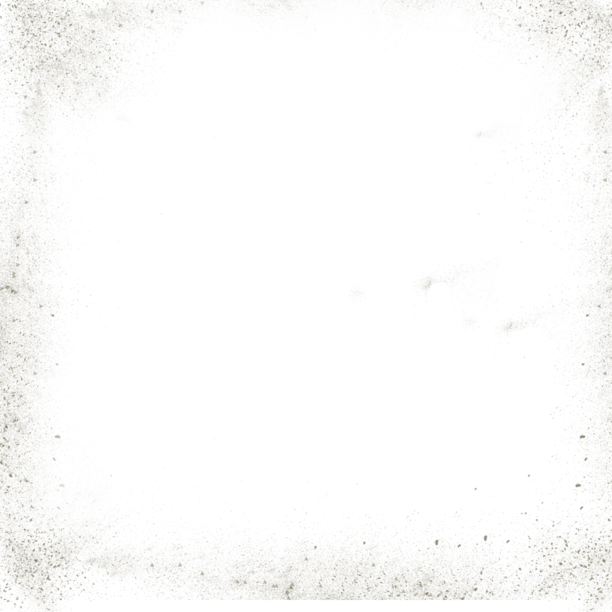
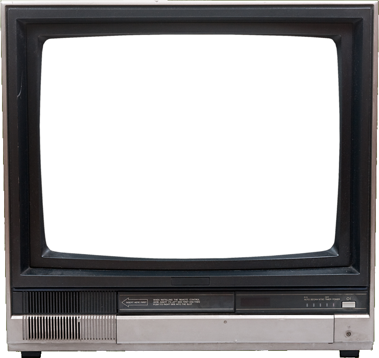
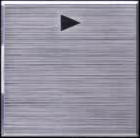
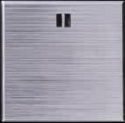
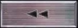
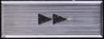
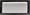
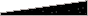

It is a sad and true story that I will not tell you, the one on how I started to surf and game for money. Instead I'll tell you the true story about my entrance in the numbers of the 1%.
I must explain before, the ropes of gaming for money and surfing for clicks. Gaming for money is not gambling or playing sports professionally. They are old passtimes and professions that can be found documented in ancient civilizations like the egyptian or chinese.
It's a new concept breeded from mixing the Ars Technica, the Internet, the necessity to fill our time with something to do and the will to make this time entertaining.
One of the first P2E games I can think of is "Entropia Universe", formerly "Project Entropia", a game where you play the role of a colonist in a new planet, stranded after an alien attack and starting with only a orange pajamas. No weapons, no skills, no clues, you arrived at a city and if you were lucky some good soul would pity you and shared the ropes of the game. Fortunately this has changed and there is now a big comunity of players and societies that help the newcomers in ways unimaginable in the early times of Entropia Universe.
There I learnt the lost art of multitasking when shouting WTB and WTS sweat and materials in the square of Port Atlantis and reading a book. Also the secrets of grinding with trapped Cornundacaudas and Cornundos to sweat them in the Zychion outskirts. There were some other forbidden arts that maybe I will tell you about someday, but the story for today doesn't need those.
Enough rantling about the old Internet, let's explain how I played Rollercoin and what it is this game.
Rollercoin is a "mining simulator", where "mining" refers to the act of aquire cryptocurrencies using specialised equipment, and "simulator" refers to the fact that you aren't actually using any computing force to do the aforementioned task. You are just pretending to build a mining farm in the environment of a 8-bit like web game. This gives the developers the freedon to make some changes to the real world mining, like playing old arcade games gives your rig computing power, or hashrate or the fact that miners doesn't cost hundreds of dollars. Also you have an ingame currency, the RLT (Rollertoken), used to buy ingame miners and other stuff.
You can mine several criptocurrencies, simultaneously by splitting your hashrate, or a single one. The reward of each currency changes weekly and is anounced in their blog and social network acounts. You can mine RLT, wich is only for ingame market, or "real" cryptos that you can withdraw when reached the theresold. BTC, ETH (ERC-20), BNB (BEP-20), BUSD (BEP-20), USDT (ERC-20), MATIC, Doge and Solana are the currencies active as for June 2022.
The game also offers minitasks that can give you a good amount of RTL. It has direct links to surveys, that can be uo to 3 RLT, playing games via Offertoro or signing if in different websites or offers.
I must start explaining the strategy I devised. The plan was to use at least eight hours a day grinding and filling tha blank times with tasks such as clicking surfpages, shortlinking or filing tasks.
Grinding is not for the faint of heart, literally, you must be hidrated, but not abuse of carbonated or caffeinated drinks, maintain a good sodium equilibrium with some snacks and do regular pauses to stretch and tone your muscles. But at the start of every online game a bit of grind must be done to reach a level where you can advance smoothly and get some rewards. Depending on the game and the goal, several kinds of grinding are available, for level by pawning mobs, for skills by repeating actions, for materials to raise your crafting skills, etc.
In Rollercoin we will grind for hashing power by completing minigames.
The games have a timeout where you can't play them, when you finish a game it takes about ten seconds to synchronize the result with the server and you have several seconds before the game loads. This timeouts can be filled with other tasks, in order to do it faster is recomended to have at least two monitors, one for the games, one with the pages to multitask opened.
There are also moments when the server lags from several seconds to some minutes. Time to check the task wall and try some surveys. Mobile offers can give you a lot of RLT, but they tend to be time consuming and the games have their own strategies than can be discussed in other time. So is better stick to the surveys at least at the start.
The rewards given and time needed for completion varies on each game. Some games give a better ratio of time/reward than others so I prioritized them. I usually select this set:
1.- Token Blaster.
2.- Flappy Rocket.
3.- Cryptonoid.
4.- Crypto Hamster.
5.- Dr. Hamster.
6.- Token surfer.
7.- Lambo Rider.
8.- Enter The Chainers.
Some are very quick, and some are time consumig, it gives time to wait counter to reset when you do a full round. When there are events, I add necesary games to the rounds, or even play them all depending on the event.
There are several types of events, seasons, aniversary gifts, social networks airdrops, giveaways and contests. Seasons are the main dish, you can earn nice stuff and RLT playing them, but a routine change must be done.
In Season events, daily quests are issued, every day you must fullfill a list of tasks and every one gives you quest points. Every 100 points you get a reward, if you purchased a season pass you will get extra rewards, while F2P players get only some of the rewards. While the paid rewards are big, free ones aren't despicable, you can get good miners, materials to upgrade your miners, free timed computing power and even RLT. Completing the most of tasks is a good idea.
At this moment (Summer 2022) the tasks needed are these. They are listed in the same order that appear in the Rollercoin Event Pass Page.
Aditionally you will earn a daily bonus for each consecutive day you log, rotating weekly. First day you get 2 points, second 5, then 8, 15, 25, 35, and finally 45 points. After the seventh day the reward will start from 2 points again. With this the sum of ponts you can gain freely per week is 338.
In this kind of event you gain three points for every level up in any game. The rewards will vary and you can boost the gainings by buying lootboxes. The more games you level up the faster you get the rewards.
The daily count resets at 00:00 GMT, but the level reset has it's own timer. If you have difficulties reaching level 6 in a game, try to let ir rest and don't raise up it very much.
My objective was to get around 1PHs of mining power, at first, with no miners in the room I started playing all the games until I reached the max level I could. After two weeks I gained several miners, and with the surveys RTL I could afford a cheap miner. That gave me some extra bonus power, because every miner raises your total hashing rate by e little percentage.
At some time an event started, could't complete all the tasks because my level in 2048 was too high and I started to play the event with little time. Learned that is a good idea to check regularily the announcements in the blog and the social networks. The quests reset is at 00:00 GMT, if I play with the minimun starting level any game, I can finish all the games related tasks in about 3 hours, four to be safe. It's convenient then to let the games I can't level untouched, or level them at least twelve hours before the reset son they are at the lowest level when the daily start again.
When the level event started, since gaining levels in all the games is he main objective, I decided to level all the games to level six before 12:00 GMT, and then continue leveling the games I could level without problems, like coin-click, flappy rocket or cryoto hamster.
After the leveling event went again to the main strategy of reaching max levels and playing only the games I was good at. Since the rewards included miners and bonus power, I could stay with a,1 and more PHs without problems, leaving spare time to do other tasks non rollercoin related.
Soemetimes you will be in a hurry and need to finish the daily misions as fast as possible. Remember that completing the two rounds of 15 wins will give you 30 wins in the counter. The fastest way to reach the other 50 is just to start the first game you see available for start, and ignore everything else but the two games needed for the 15 rounds. In about 90 minutes you'll fullfill the required tasks. Remember also to check the questes every finished round to complete the most of them before the 00:00 GMT reset starts.
After several months of playing, clicking Ads, solving shortlinks and sharing my bandwith, I started to earn some stable incomes. I also too a peek into some crypto exchanges and started trading little amounts, always with the calculator at hand checking the operation rates.
Then, sudenly, one day the mailam came with a certificate mail. I always evade certificates since they only carry bad news, but this time it was impossible since I met him just at the gate whith my dogs. He also has a pen, no escape was posible and signed the document.
Trembling, I opened the letter, I signed it so ignoring it was not a valid option. Expecting an invoice or even worst it was the notice of some lawyer asking for a meeting that week. "Alea jacta est" I tought and took the phone, made an apointment for the next morning and braced myself.
At first hour in the morning I went to the lawyer office, it was in one of the best buildings of the city. I was conducted to the boss by a secretary, he was sitting below a wooden desk with a centenary look.
- Please take a seat Mr. Frindestown. - He said with with a slight smile. - First, let me express my most sicere condolences for your loss, Miss Julia was not only my best client, but also a friend. We had long talks about y...
- Wait a moment please - I interrupted - What is this about?
- It's about your aunt Julia de Lafuente Rodríguez, she passed away two months ago and let you all her assets excepting the legitimate, and taxes. - A wide smile surged in his face - Of course if you accept them.
I recalled Julia, friend of my mother not really my aunt. She was smart and full of life, always travelling and doing a lot of things. We had a lot of fun and profound conversations, but never thought about this, I had isolated myself these years and lost contact with everybody, even the family. Well, any help is welcome. The man behid the bureau understood what I was thinking, and his smile softened.
- I think you'll accept the inheritance, isn't it?
- I regret losing contact with her, it's a bittersweet gift that I can't reject. Not only for sentimental reasons.
- I'm sure she would wanted the best for you, I think this maybe proof.
And he started to recite the list of assets. After a while I understood that I wouldn't need to look for money anymore in my life. And thats how, while I was frantically clicking my way to survival I reached the most filthy wealth I could dream of. Now, sitting in a café at Portinax, watching as the crew maintain the yatch, I write this lines to help others keep themselves afloat while awaiting for the right moment and remember that no great fortune can be made, only seized or inherited.
Basic Strategies and Tactics Playing Rollercoin
Or
On How I Came to Be Filthy Rich while Surfing and Gaming in the Ynternets.
By Frindestown.
It is a sad and true story that I will not tell you, the one on how I started to surf and game for money. Instead I'll tell you the true story about my entrance in the numbers of the 1%.
I must explain before, the ropes of gaming for money and surfing for clicks. Gaming for money is not gambling or playing sports professionally. They are old passtimes and professions that can be found documented in ancient civilizations like the egyptian or chinese.
It's a new concept breeded from mixing the Ars Technica, the Internet, the necessity to fill our time with something to do and the will to make this time entertaining.
One of the first P2E games I can think of is "Entropia Universe", formerly "Project Entropia", a game where you play the role of a colonist in a new planet, stranded after an alien attack and starting with only a orange pajamas. No weapons, no skills, no clues, you arrived at a city and if you were lucky some good soul would pity you and shared the ropes of the game. Fortunately this has changed and there is now a big comunity of players and societies that help the newcomers in ways unimaginable in the early times of Entropia Universe.
There I learnt the lost art of multitasking when shouting WTB and WTS sweat and materials in the square of Port Atlantis and reading a book. Also the secrets of grinding with trapped Cornundacaudas and Cornundos to sweat them in the Zychion outskirts. There were some other forbidden arts that maybe I will tell you about someday, but the story for today doesn't need those.
Enough rantling about the old Internet, let's explain how I played Rollercoin and what it is this game.
Rollercoin is a "mining simulator", where "mining" refers to the act of aquire cryptocurrencies using specialised equipment, and "simulator" refers to the fact that you aren't actually using any computing force to do the aforementioned task. You are just pretending to build a mining farm in the environment of a 8-bit like web game. This gives the developers the freedon to make some changes to the real world mining, like playing old arcade games gives your rig computing power, or hashrate or the fact that miners doesn't cost hundreds of dollars. Also you have an ingame currency, the RLT (Rollertoken), used to buy ingame miners and other stuff.
You can mine several criptocurrencies, simultaneously by splitting your hashrate, or a single one. The reward of each currency changes weekly and is anounced in their blog and social network acounts. You can mine RLT, wich is only for ingame market, or "real" cryptos that you can withdraw when reached the theresold. BTC, ETH (ERC-20), BNB (BEP-20), BUSD (BEP-20), USDT (ERC-20), MATIC, Doge and Solana are the currencies active as for June 2022.
The game also offers minitasks that can give you a good amount of RTL. It has direct links to surveys, that can be uo to 3 RLT, playing games via Offertoro or signing if in different websites or offers.
I must start explaining the strategy I devised. The plan was to use at least eight hours a day grinding and filling tha blank times with tasks such as clicking surfpages, shortlinking or filing tasks.
Grinding is not for the faint of heart, literally, you must be hidrated, but not abuse of carbonated or caffeinated drinks, maintain a good sodium equilibrium with some snacks and do regular pauses to stretch and tone your muscles. But at the start of every online game a bit of grind must be done to reach a level where you can advance smoothly and get some rewards. Depending on the game and the goal, several kinds of grinding are available, for level by pawning mobs, for skills by repeating actions, for materials to raise your crafting skills, etc.
In Rollercoin we will grind for hashing power by completing minigames.
"Timings"
The games have a timeout where you can't play them, when you finish a game it takes about ten seconds to synchronize the result with the server and you have several seconds before the game loads. This timeouts can be filled with other tasks, in order to do it faster is recomended to have at least two monitors, one for the games, one with the pages to multitask opened.
There are also moments when the server lags from several seconds to some minutes. Time to check the task wall and try some surveys. Mobile offers can give you a lot of RLT, but they tend to be time consuming and the games have their own strategies than can be discussed in other time. So is better stick to the surveys at least at the start.
"Ratios"
The rewards given and time needed for completion varies on each game. Some games give a better ratio of time/reward than others so I prioritized them. I usually select this set:
1.- Token Blaster.
2.- Flappy Rocket.
3.- Cryptonoid.
4.- Crypto Hamster.
5.- Dr. Hamster.
6.- Token surfer.
7.- Lambo Rider.
8.- Enter The Chainers.
Some are very quick, and some are time consumig, it gives time to wait counter to reset when you do a full round. When there are events, I add necesary games to the rounds, or even play them all depending on the event.
"Events"
There are several types of events, seasons, aniversary gifts, social networks airdrops, giveaways and contests. Seasons are the main dish, you can earn nice stuff and RLT playing them, but a routine change must be done.
Season Quests
In Season events, daily quests are issued, every day you must fullfill a list of tasks and every one gives you quest points. Every 100 points you get a reward, if you purchased a season pass you will get extra rewards, while F2P players get only some of the rewards. While the paid rewards are big, free ones aren't despicable, you can get good miners, materials to upgrade your miners, free timed computing power and even RLT. Completing the most of tasks is a good idea.
At this moment (Summer 2022) the tasks needed are these. They are listed in the same order that appear in the Rollercoin Event Pass Page.
| Task | Reward | Tips |
| Win 80 games. | 12 Quest points. | Just doing the daily routine you will awin enough games. |
| Win 15 times a random game. | 3 Quest points. | If you start at level 1 you will need to reach level 6 to beat this quest. |
| Win 15 times a random game. | 3 Quest points. | If you have difficulties with a concrete game, chak the tips below and try to just reach the 6th level only if you are completing it every day. |
| Check a randon social network. | 2 Quest points. | Just click the link they provide. |
| Check a randon social network. | 2 Quest points. | Just click the link they provide. |
| Those are the quest free to complete daily. They sum 29 daily points. Below are the daily quest with special requisitions. |
||
| Invite your Friend. | 11 Quest points. | When a user click your referral link and registers this quest completes. You can find your referral link at the referal program section listed in the right menu. Subscribing a referral promoting page, publising your link as signature in forums and promoting the link in advertising networks helps you get referrals. I have a list of referral and promotion sites here. You can also make paid ads in sites like Dutchycorp or Faucetpay. |
| Spend RLT Token. | 13 Quest points. | Spend 10 RTL in the shop. If you have enough is better to buy a season pass, but if you are going for the free way and needed some extra points you can save your earnings till the last days of the event in order to get the reward you wanted. |
| Open lootbox. | 5 Quest points. | Spend the RTL of the quest aforementioned in boxes and get 5 points daily if you are in a pinch for the last rewards of the event. |
"Level up run."
In this kind of event you gain three points for every level up in any game. The rewards will vary and you can boost the gainings by buying lootboxes. The more games you level up the faster you get the rewards.
The daily count resets at 00:00 GMT, but the level reset has it's own timer. If you have difficulties reaching level 6 in a game, try to let ir rest and don't raise up it very much.
General Strategy and Tactics
My objective was to get around 1PHs of mining power, at first, with no miners in the room I started playing all the games until I reached the max level I could. After two weeks I gained several miners, and with the surveys RTL I could afford a cheap miner. That gave me some extra bonus power, because every miner raises your total hashing rate by e little percentage.
At some time an event started, could't complete all the tasks because my level in 2048 was too high and I started to play the event with little time. Learned that is a good idea to check regularily the announcements in the blog and the social networks. The quests reset is at 00:00 GMT, if I play with the minimun starting level any game, I can finish all the games related tasks in about 3 hours, four to be safe. It's convenient then to let the games I can't level untouched, or level them at least twelve hours before the reset son they are at the lowest level when the daily start again.
When the level event started, since gaining levels in all the games is he main objective, I decided to level all the games to level six before 12:00 GMT, and then continue leveling the games I could level without problems, like coin-click, flappy rocket or cryoto hamster.
After the leveling event went again to the main strategy of reaching max levels and playing only the games I was good at. Since the rewards included miners and bonus power, I could stay with a,1 and more PHs without problems, leaving spare time to do other tasks non rollercoin related.
"Speed run."
Soemetimes you will be in a hurry and need to finish the daily misions as fast as possible. Remember that completing the two rounds of 15 wins will give you 30 wins in the counter. The fastest way to reach the other 50 is just to start the first game you see available for start, and ignore everything else but the two games needed for the 15 rounds. In about 90 minutes you'll fullfill the required tasks. Remember also to check the questes every finished round to complete the most of them before the 00:00 GMT reset starts.
CONCLUSION
After several months of playing, clicking Ads, solving shortlinks and sharing my bandwith, I started to earn some stable incomes. I also too a peek into some crypto exchanges and started trading little amounts, always with the calculator at hand checking the operation rates.
Then, sudenly, one day the mailam came with a certificate mail. I always evade certificates since they only carry bad news, but this time it was impossible since I met him just at the gate whith my dogs. He also has a pen, no escape was posible and signed the document.
Trembling, I opened the letter, I signed it so ignoring it was not a valid option. Expecting an invoice or even worst it was the notice of some lawyer asking for a meeting that week. "Alea jacta est" I tought and took the phone, made an apointment for the next morning and braced myself.
At first hour in the morning I went to the lawyer office, it was in one of the best buildings of the city. I was conducted to the boss by a secretary, he was sitting below a wooden desk with a centenary look.
- Please take a seat Mr. Frindestown. - He said with with a slight smile. - First, let me express my most sicere condolences for your loss, Miss Julia was not only my best client, but also a friend. We had long talks about y...
- Wait a moment please - I interrupted - What is this about?
- It's about your aunt Julia de Lafuente Rodríguez, she passed away two months ago and let you all her assets excepting the legitimate, and taxes. - A wide smile surged in his face - Of course if you accept them.
I recalled Julia, friend of my mother not really my aunt. She was smart and full of life, always travelling and doing a lot of things. We had a lot of fun and profound conversations, but never thought about this, I had isolated myself these years and lost contact with everybody, even the family. Well, any help is welcome. The man behid the bureau understood what I was thinking, and his smile softened.
- I think you'll accept the inheritance, isn't it?
- I regret losing contact with her, it's a bittersweet gift that I can't reject. Not only for sentimental reasons.
- I'm sure she would wanted the best for you, I think this maybe proof.
And he started to recite the list of assets. After a while I understood that I wouldn't need to look for money anymore in my life. And thats how, while I was frantically clicking my way to survival I reached the most filthy wealth I could dream of. Now, sitting in a café at Portinax, watching as the crew maintain the yatch, I write this lines to help others keep themselves afloat while awaiting for the right moment and remember that no great fortune can be made, only seized or inherited.
The Games and their Tactics
| Coin Click | ||
The goal of this game is click on the coins while evading the bombs before the timer expires. Is easy te reach the max level, but the hash power it gives is poor related to the time needed to complete. At the early levels you can click surf captchas when the hamster drops a streak of bombs. |
Click on the image to watch the video |  |
| Token Blaster | ||
A bootleg of Galaxian. The objetive is blast all the invaders before the time expires or they blast you three times. It gives a good hashrate, but after level 6 is almost imposible to advance for le me, the enemies are tougher and most of the tries the timer expires before I can wipe them all. To survive the attacks you must try to not get cornered when evading the shots or the enemy ships. There are random drops of weapon boosts, the half moon shaped one is very effective against the tough invaders and you should try to not waste it in the weaker ones. The three point one gives a triple shot fired in an arc, is better to shot it staying at the center of the screen to maximize the effect. The last one is a dual lazor shot, very useful for thinning the ranks of the alien formation. Since is fast paced and keyboard oriented, altough you can use the mouse, I do not recommend doing other tasks while playing. |
Click on the image to watch the video |  |
| Flappy Rocket | ||
| Flappy Bird clone. A very simple and fast game. You control an ever falling rocket by clicking on the screen or using the space bar, and must avoid the pillars and the ground. Each level the speed increases, and contrary than you could think, it makes the game easier. The basic tactic is trying to stay below the half of the screen since is faster to climb than to sink, the background has lines that can be used as guides. It has a good hasrate/time played ratio. Because is fast paced I do not recommend tring to complete other tasks when playing. It is a good idea to move the mouse to a corner in order to avoid clicking by accident the repeat or cancel buttons once you reach the limit score. |
Click on the image to watch the video |  |
| Token Blaster | ||
A bootleg of Galaxian. The objetive is blast all the invaders before the time expires or they blast you three times. It gives a good hashrate, but after level 6 is almost imposible to advance for le me, the enemies are tougher and most of the tries the timer expires before I can wipe them all. To survive the attacks you must try to not get cornered when evading the shots or the enemy ships. There are random drops of weapon boosts, the half moon shaped one is very effective against the tough invaders and you should try to not waste it in the weaker ones. The three point one gives a triple shot fired in an arc, is better to shot it staying at the center of the screen to maximize the effect. The last one is a dual lazor shot, very useful for thinning the ranks of the alien formation. Since is fast paced and keyboard oriented, altough you can use the mouse, I do not recommend doing other tasks while playing. |
Click on the image to watch the video | |
| Cryptonoid | ||
A nice bootleg of Arkanoid, which was a remake of Blockout. In this game the objective is to destroy the blocks in the upper part of the screen with a ball and a pad that you can move with the cursor keys or the mouse. If you miss the ball you lose one life. Launch the ball with space key or primary mouse button. The three first levels are very easy but things can get messy on later levels. The basic strategy consists in trying to get the ball into the the space over the highest row and let it destroy the blocks. But be prepared because it will gain speed. Some random blocks will drop a powerup, there are four types of them. A heart will replenish our spent lives. A lazor icon will give you a dual shooter to break the blocks. A fire will give you a firebal that can clear the blocks in its way. A green ball will make your pad sticky, combined with the lazor makes a very powerful combo. You can use the break to quickly check other tasks, remember that the minigames are timed. This minigame has a very good hashrate reward and with a bit of practice you can reach high levels in it gaining a good amount of mining power. |
Click on the image to watch the video |  |
| Coinmatch | ||
Cryptocoins themed Bejeweled clone. The objective of the game is to make a line of three or more coins of the same type, either vertical or horizontal. It's a relaxing game and you can check task when you got a good combination. The reward is not high, but generally it takes little time to complete. You can complete other tasks while playing. |
Click on the image to watch the video |  |
| Crypto Hamster | ||
You must go up jumping over platforms and killing or avoiding aliens. A bar on the right tracks your way to the goal. There are three types of platforms, solid ones that are brown, destroyable that are gray and gravel ones. They can be static or move horizontally. The gravel platforms absorb your jumps, so try to avoid them. When you find lots of moving platforms, try to pass them quickly as the path you visualized will change. I you can't see a path in your side of the screen, remember that your toon isn't blocked by the sides of the screen so you can reach the right side from the left side, and viceversa. This doesn't apply to the moving enemies oor platforms. You can also jump over the aliens using them as destroyable stepping stones. Fast paced and high rewarding, it's not recomended multitasking. |
Click on the image to watch the video |  |
| 2048 Coins | ||
Not a very popular minigame, it's stressing and the reward is low. You must stick blocks in pairs. Each one has a different value, that is indicated at the right of the screen. The tactic to do son is simple, just move the pieces in a circular way, be clockwise or counter-clock. Since the keyboard sometimes lag, I recommend using the mouse to do so. Sometimes, specially when there are many blocks or four of them collide the game will lag a bit, and the timer will pause. Not recommended for multitasking. |
Click on the image to watch the video |  |
| Coin Flip | ||
A memory game. Unveil the glyphs by clicking on them, remember the position and pair them. Not very difficult, but also a low reward. You can multitask. |
Click on the image to watch the video |  |
| Dr. Hamster | ||
A coin themed Tetris clone. You must match four or more blocks of the same color to clear them. You can rotate and move the falling blocks either with keyboard or mouse, I prefer the former. Also there are some special blocks, also colored but with a monster face. Focus on clear them, when done, you win the game without having to reach the goal score. It has a good time/reward ratio. Can be multitasked, but is difficult. |
Click on the image to watch the video |  |
| Token Surfer | ||
Skate with your hamster trough the city avoiding chasms, clutter and low flying birds. Use your mouse to jump, double jumps can be done, also you can jump over the birds. Good reward ratio. Easy to multitask. Sometimes the path is impossible, but there are enough lives to get trough the game. |
Click on the image to watch the video |  |
| Lambo Rider | ||
Parallax race with your hamster's Lambo. Collect the coins dropped on the street and avoid other cars, sewage holes and cluter. There is some lag in the controls, it may take a while to get the gist of them. Also luck is needed because sometimes ther will not be enough cois or the path is blocked, specially at hogher levels. Not recomended for multitasking, high hashing reward. |
Click on the image to watch the video |  |
| Enter the Chainers | ||
Survive the waves of chainer clones in a 3D retrogame. Move your character with arrow keys or "WSAD", aims and shoot with the mouse. You have two guns with a total of ten rounds, they reload automatically after expended, or can be reloaded pressing "R". If a Chainer reaches you you lose one life, but you respawn full of ammo and with a time limited invulnerability. Ocasionally the agents drop TNT that clears all the spawned mobs or extra lives. Choose carefully the timing to get them because they spawn only for a few seconds. You can instareload when killed. Can be multitasked when a wave is cleared. Nice reward ratio. |
Click on the image to watch the video |  |








00:00:00
HELPClicking on the images will open the media player. The media player will autoplay the selected clip. You can pause and resume with the correspondent buttons at the bottom right of the player. You can play the next or previous clip with the controls near the pause button. The volume is the bottom slider. You can advance or go to a determined time in the track using the trackin slider that is over the volume. To close the player click on the small button of the right, below the "On" label and over the power led. The games hadn't sound and I didn't put any score on the clips yet. Your sound card is probably OK. This page is intended to be viewed in modern desktops, low resolution screens or mobile devices will have problems displaying the videos and slides. |
ABOUTA long ago, an aquitance of mine, Mr. John Titor shared the schematics and code for a "time prospecting device". It is an artifact that can probe different outcomes for a given action. It was the 90s, the most advanced processor that I could reach didn't have the minimum specs to run the program, nor any hardware could transfer the bandwith of the data flow and no memory could store the IA datagrams and nets required. Nowadays we did build a prototipe that could see 10^18 diferent variants of a determined coin flip, more or less 10s in the future and 2 in the past. It took more than a week to do so. But in the last ten years, neural and regular chips ones had advanced a lot, also I depured and debugged the code and blueprints, optimizing the process. I could then limit the number of posibilities and explore a selected route in the garden of forking paths. I configured the machine to show records stored electronically in the alternate realities since reading them was way much simpler than aquiring the state of light particles to produce images and mass variations to produce sounds of the original device. In that way I could access all the data flow of a technologically advanced reality, ignoring the others. When exploring a well documented route Known as Orbis Tertium I found traces of an alternate me that lived there. His story is what you will be told here. So yes, all the events related here are real and happened to me, but unfortunately not the me of the universe in wich you are reading this. |
CREDITSFonts downloaded from here, Int10h. Int 10h is a BIOS interruption to access the display in 80x computers. Also from Int10h got a script named ffcrt to transform the original videos into CRT looking ones. The effects of this page are inspired and some code borrowed from Edwin at dev.to and the related ones. The bevel is from Retro CRT Startpage. Here is his git. Arachnophilia and notepad++ were used to write the HTML, javascript and CSS of this page. OBS Studio to capture the games. Shotcut to edit and recompress. ffmpeg is used by ffcrt, the Int10h script. Screen dirt from the Inmersive Pip-Boy Cracked Screen. Irfanview and Gimp used to edit bitmap images. Inkscape for vectors. StackOverflow, W3Schools and Mozilla MDN as sources of information. RollerCoin is a game property of their autors. Licensed under MIT license. Using careware license is welcomed. Sharing is caring. SVG filter for effects: https://gist.github.com/rafszul/a6f28a0e4b912dd7c18b |